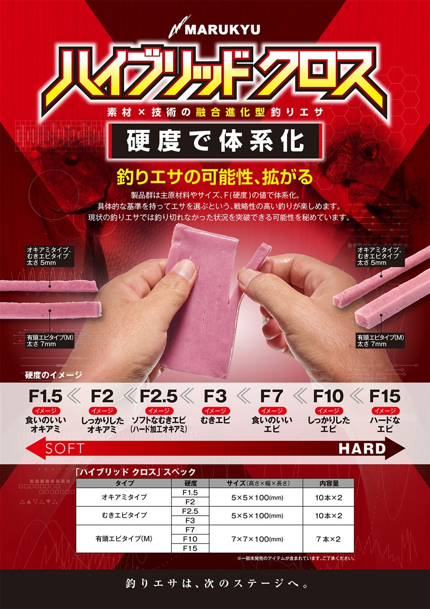
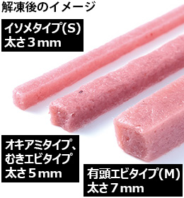
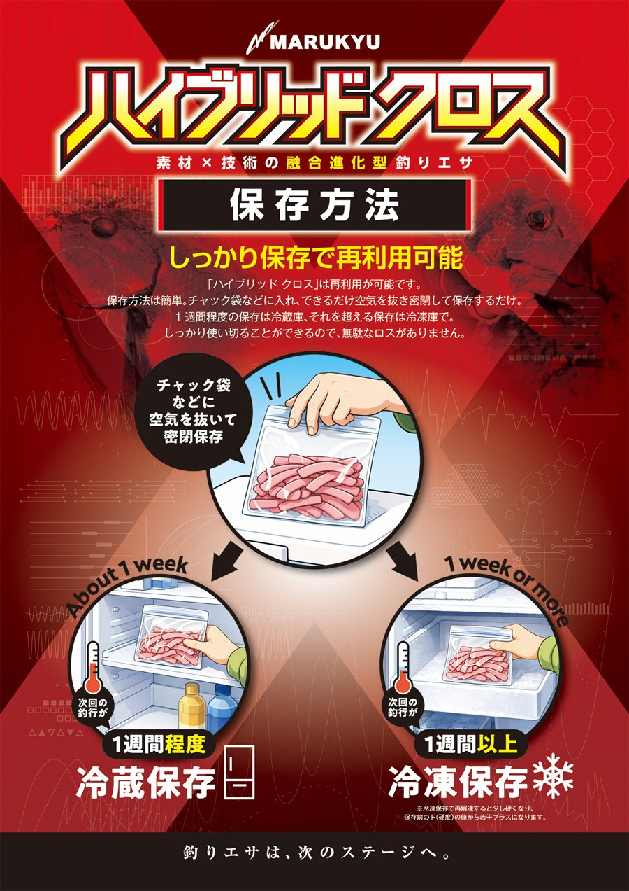
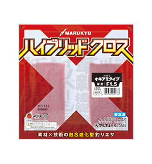
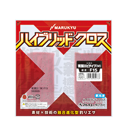
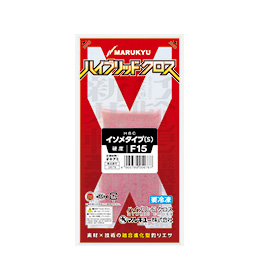
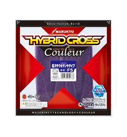
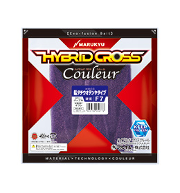

ハイブリッド クロス
（HYBRID CROSS）
ハイブリッド クロス（HYBRID CROSS）はマルキユー（MARUKYU）の人工くわせエサです。
食いのよさとエサ持ちのよさを兼ね備えた、素材×技術の融合進化型釣りエサ。グレ・チヌのフカセ釣りから、かかり釣り、船のタチウオテンヤ、海上釣り堀、投げ釣りのシロギスまで使えます。
オキアミやイワシなどの生素材をミンチ状にして、マルキユー独自のエサ持ち素材と融合（ハイブリッド）。主原材料・サイズ・F（硬度）の値で体系化されているので、「どの硬さを、どう付けるか」を数字で選べるのが一番の特徴です。

画像出典:マルキユー公式HP
スペック
- メーカー
- マルキユー（MARUKYU）
- タイプ
- 人工くわせエサ（冷凍）
- ラインナップ
- オキアミタイプ・むきエビタイプ・有頭エビタイプ（M）・イソメタイプ（S）／ハイブリッド クロス クルール（船タチウオテンヤタイプ）
- 硬度（F値）
- F1.5〜F15
- サイズ（高さ×幅×長さ）
- オキアミ・むきエビ：5×5×100mm／有頭エビ（M）：7×7×100mm／イソメ（S）：3×3×100mm／船タチウオテンヤ：12×25×130mm
- 内容量
- 10本×2・7本×2・16本・8本（タイプにより異なる）
- 保存
- 使い残しはチャック袋で密閉し、1週間程度なら冷蔵、それ以上は冷凍
- 価格
- 公式サイトに記載なし
▼今すぐチェック
ハイブリッド クロスの特徴
天然エサの食いのよさと、人工エサならではのエサ持ち・安定した品質
-
生素材をミンチにして固めたエサ
オキアミやイワシなどの素材そのものを原料に、エサ持ちを補助する素材を融合。生エサの食いのよさはそのままに、エサ持ちの性能を高めている。天産物のように身質やサイズのバラつきがない。
-
F値（硬度）で選べる
F1.5（食いのいいオキアミ）からF15（ハードなエビ）まで、硬さを数字で表記。エサ取りが多ければ硬く、食い込みが悪ければやわらかく、と具体的な基準でローテーションできる。
-
割いて付けるだけ、残りは再利用できる
解凍したら、あらかじめ入っているスリットに沿って割き、ハリに付けるだけ。使い残しは密閉して冷蔵・冷凍すれば次の釣行でも使える。
ハイブリッド クロスの使い方
解凍したら、あらかじめ入っているスリットに沿って割き、ハリに付けます。
付け方は自由で、ハリの長さに合わせて切る、タラシを長めに出す、ハリの3倍ほどの長さにしてチモトを押さえながら詰めてシルエットを大きくする、縫い刺しにしてダンゴ状にする、などのアレンジができます。テンヤなどと組み合わせて使うこともできます。
投げ釣りでズレやすい時は、3〜5mm通したら1度抜いて通し刺しにし、先に抜いた上部をこき上げてハリの耳を出すと、回収しても付けたままの姿を保ちやすくなります（林賢治インストラクターの付け方）。
ハイブリッド クロスの得意な状況
エサ取りが多くてオキアミがすぐになくなる時、遠投してもエサを外したくない時、オキアミで食わなくなった時が得意です。
ハードに加工したオキアミより沈下がゆっくりで、マキエと同調しやすいので、寒の時期や食いの渋い日にも力を発揮します。
ワンポイント
冷凍保存して再解凍すると少し硬くなり、F値は保存前より若干プラスになります。やわらかさが大事な場面では、新しいパックを使いましょう。
ハイブリッド クロスの硬度（F値）の使い分け
| F値 | タイプ | 硬さのイメージ | こんな時に |
|---|---|---|---|
| F1.5 | オキアミ | 食いのいいオキアミ | 食い込み重視。オキアミ感覚でタラシを出して使いたい時（2026年11月5日発売予定） |
| F2 | オキアミ | しっかりしたオキアミ | グレ・チヌの基本。迷ったらまずこの硬さから |
| F2.5 | むきエビ | ソフトなむきエビ（ハード加工オキアミ） | エサ取りが多い時。大きく付けてシルエットを出したい時 |
| F3 | むきエビ | むきエビ | F2.5でもエサ取りにやられる時 |
| F7 | 有頭エビ（M） | 食いのいいエビ | 海上釣り堀のマダイ。かかり釣りのエサ取り対策の1本目 |
| F10 | 有頭エビ（M） | しっかりしたエビ | エサ持ちを重視したい時 |
| F15 | 有頭エビ（M）／イソメ（S） | ハードなエビ | 海上釣り堀のリアクション・青物。投げ釣りのシロギス（イソメタイプ） |
※F値と硬さのイメージは公式の「硬度のイメージ」より。「こんな時に」は公式のマルキユーインストラクターの実釣コメントをもとにまとめています。船タチウオテンヤタイプ（F5・F7・F10）は下の「釣り別の使い分け」を参考にしてください。
硬度のイメージとサイズ
硬さはF1.5（SOFT）からF15（HARD）まで。太さはイソメタイプ（S）が3mm、オキアミ・むきエビタイプが5mm、有頭エビタイプ（M）が7mmです。


画像出典:マルキユー公式HP
保存方法
使い残しはチャック袋などに入れ、空気を抜いて密閉。次回の釣行が1週間程度なら冷蔵、1週間以上なら冷凍で保存します。冷凍して再解凍すると少し硬くなり、F値は保存前より若干プラスになります。

画像出典:マルキユー公式HP
釣り別の使い分け
公式サイトで紹介されているマルキユーインストラクターの実釣コメントから、釣りごとのおすすめスペックと使い方をまとめました。
| 釣り | おすすめスペック | 使い方のポイント | インストラクター |
|---|---|---|---|
| メジナ・グレ （フカセ釣り） |
むきエビタイプ F2.5 むきエビタイプ F2 |
オキアミより軽く、独特の漂い方で食い込みがいい。使い勝手のいいF2を基本に、エサ取りが多ければF2.5をエサ取りの口に入らないくらい大きく付ける。 | 平和卓也・森井陽・小林一史・猪熊博之 |
| クロダイ・チヌ （フカセ釣り） |
オキアミタイプ F1.5 むきエビタイプ F2.5 |
F1.5（加工オキアミのイメージ）でエサ取りにやられたらF2.5（ボイルオキアミのイメージ）へ。ハリの3倍ほどの長さにして詰め、シルエットを大きくするアレンジも。 | 久保野孝太郎・前西喜弘・南康史 |
| クロダイ・チヌ （かかり釣り） |
むきエビタイプ F2 | エサ取りが多い時はF7からスタートし、F2.5→F2と下げて「食う硬さ」を探す。オキアミや練りエサとのローテーションにも。 | 山本孝義・森圭一郎 |
| タチウオ （船・テンヤ） |
クルール 船タチウオテンヤタイプ F7 パープル | まずF7で状況を見る。掛かりが浅い時や追わせる釣りはF5、即掛けできる高活性時やルアー感覚で使うならF10。5〜6本釣ったあとでもそのまま使えるエサ持ち。 | 三石忍 |
| マダイ・青物 （海上釣り堀） |
有頭エビタイプ F15 有頭エビタイプ F7 |
F7の通し刺しのウキ釣りでマダイ。F15はナジむ早いタイミングでマダイに、チョン掛けで底にステイさせてから巻き上げると青物に効く。 | 北条公哉 |
| シロギス （投げ釣り） |
イソメタイプ（S）F15 | 付け替えずに連続でヒットするほど摂餌力が高い。ズレにくく吸い込みやすい形を保てるF15が、試した中で最もヒット率が高かった。 | 林賢治 |
※製品テスト時のコメントをもとにしています。テストでは発売未定のF1などの硬さも使われていますが、この表では発売済み・発売予定のものだけを載せています。
ラインナップ一覧（購入リンク）
ハイブリッド クロスは全8アイテム、ハイブリッド クロス クルールは全3アイテム。タイプ・硬度ごとに、各ショップの商品ページへのリンクをまとめています。
| 商品 | タイプ・硬度 | サイズ・内容量 | 発売日 | 購入 |
|---|---|---|---|---|
 |
オキアミタイプ 硬度 F1.5 製品番号 0670 |
5×5×100mm 10本×2 |
2026年11月5日発売予定 | Amazon楽天Yahoo! |
| オキアミタイプ 硬度 F2 製品番号 0671 |
5×5×100mm 10本×2 |
2026年4月16日 | Amazon楽天Yahoo! | |
| むきエビタイプ 硬度 F2.5 製品番号 0672 |
5×5×100mm 10本×2 |
2026年4月16日 | Amazon楽天Yahoo! | |
| むきエビタイプ 硬度 F3 製品番号 0680 |
5×5×100mm 10本×2 |
2026年9月17日 | Amazon楽天Yahoo! | |
| 有頭エビタイプ（M） 硬度 F7 製品番号 0673 |
7×7×100mm 7本×2 |
2026年4月16日 | Amazon楽天Yahoo! | |
| 有頭エビタイプ（M） 硬度 F10 製品番号 0674 |
7×7×100mm 7本×2 |
2026年4月16日 | Amazon楽天Yahoo! | |
 |
有頭エビタイプ（M） 硬度 F15 製品番号 0675 |
7×7×100mm 7本×2 |
2026年4月16日 | Amazon楽天Yahoo! |
 |
イソメタイプ（S） 硬度 F15 製品番号 0676 |
3×3×100mm 16本 |
2026年6月4日 | Amazon楽天Yahoo! |
 |
クルール 船タチウオテンヤタイプ（パープル） 硬度 F5 製品番号 0679 |
12×25×130mm 8本 |
2026年7月23日 | Amazon楽天Yahoo! |
 |
クルール 船タチウオテンヤタイプ（パープル） 硬度 F7 製品番号 0677 |
12×25×130mm 8本 |
2026年7月23日 | Amazon楽天Yahoo! |
| クルール 船タチウオテンヤタイプ（パープル） 硬度 F10 製品番号 0678 |
12×25×130mm 8本 |
2026年7月23日 | Amazon楽天Yahoo! |
画像出典:マルキユー公式HP
※価格は公式サイトに記載がないため、各ショップでご確認ください。発売するアイテム・タイプは変更になる場合があります。
ハイブリッド クロスとあわせてチェックしたいアイテム
-
 根魚&チヌ喰い蝦
RUDIE'S
詳細はこちら＞
根魚&チヌ喰い蝦
RUDIE'S
詳細はこちら＞
チヌや根魚をワームで狙うならこちら。
-
 シルバーウルフ アーバンクローラー2.5
ダイワ
詳細はこちら＞
シルバーウルフ アーバンクローラー2.5
ダイワ
詳細はこちら＞
チヌをフリーリグで狙うワーム。
-
 ハタ喰い・蝦
RUDIE'S
詳細はこちら＞
ハタ喰い・蝦
RUDIE'S
詳細はこちら＞
エビ型ワーム。根魚狙いに。